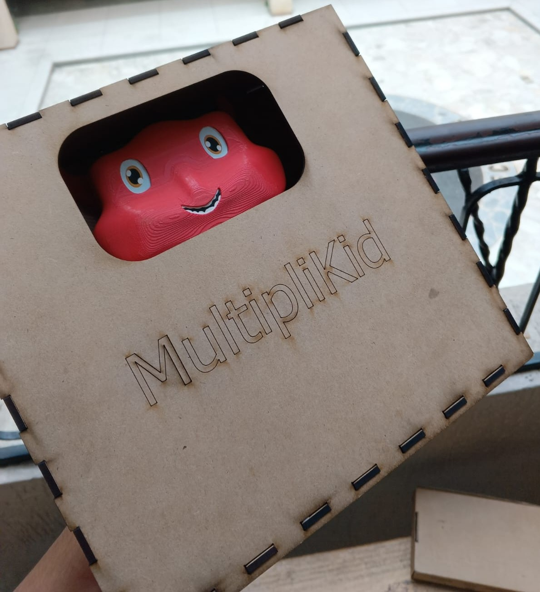

Diseño 3D & Modelado Orgánico
Case Ergonómico Infantil para Pantalla Nexus
Diseño y prototipado 3D de un estuche protector especializado para una pantalla Nexus con powerbank integrado, orientado a niños. Destaca por huir de las formas geométricas tradicionales, adoptando una silueta inspirada en la cara de un animal con patas de soporte estables para convertirlo en una tablet interactiva segura.
Autodesk Fusion / Inventor
Impresión 3D
Diseño Orgánico